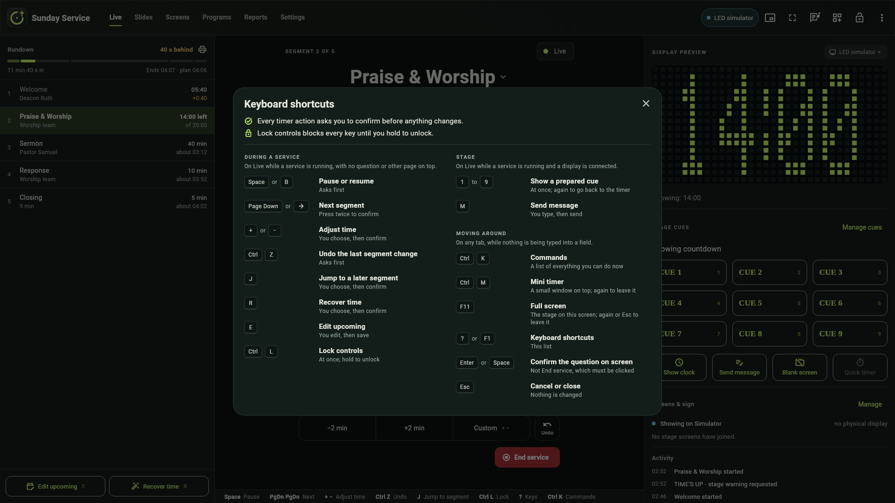
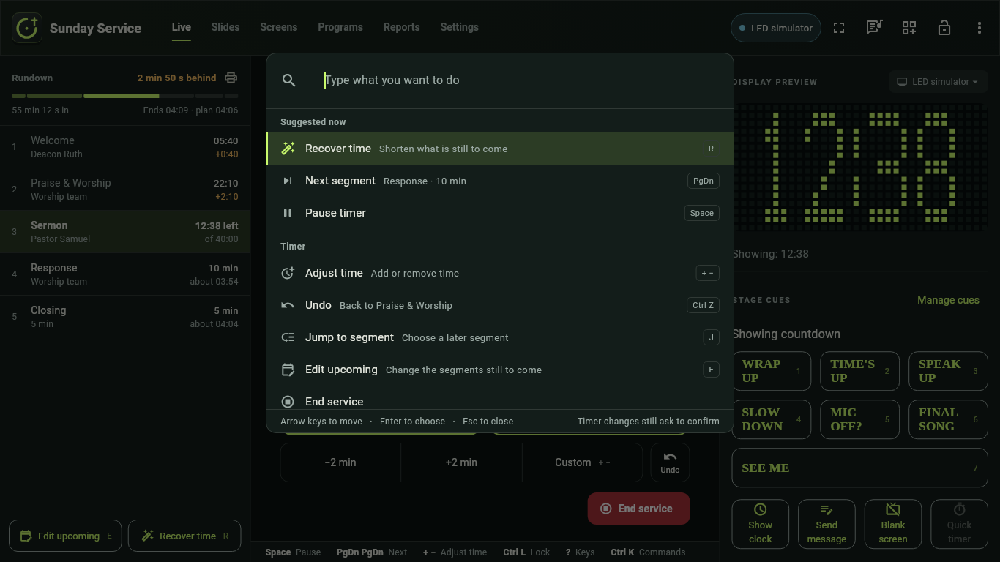
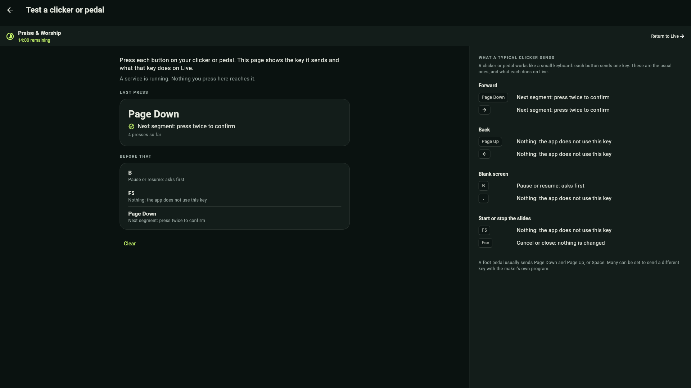

On a PC the whole service can be run from the keyboard. Two rules hold for every key:
- Every timer action asks you to confirm before anything changes.
- Lock controls blocks every key until you hold to unlock. Ctrl L locks; it cannot unlock.
Keys on Live
| Keys | What it does | How it confirms |
|---|---|---|
| Space or B | Pause or resume | Asks first |
| Page Down or → | Next segment | Press twice to confirm |
| + or − | Adjust time | You choose, then confirm |
| Ctrl Z | Undo the last segment change | Asks first |
| J | Jump to a later segment | You choose, then confirm |
| R | Recover time | You choose, then confirm |
| E | Edit upcoming | You edit, then save |
| Ctrl L | Lock controls | At once; hold to unlock |
| 1 to 9 | Show a prepared cue | At once; press again to go back to the timer |
| M | Send message | You type, then send |
| Ctrl K | Commands | A list of everything you can do now |
| Ctrl M | Mini timer | A small window on top; press again to leave it |
| F11 | Full screen | The stage on this screen; press again, or Esc, to leave it |
| ? or F1 | Keyboard shortcuts | Opens the list of keys |
| Enter or Space | Confirm the question on screen | Not End service, which must be clicked |
| Esc | Cancel or close | Nothing is changed |
Pausing takes two presses. Space asks, for example, “Pause Sermon?”; a second Space, or Enter, confirms; Esc cancels. End service and the other destructive questions must be clicked, so a stray key can never end a service.
When the keys work
- Timer and stage keys (from Space down to M in the table) work on Live while a service is running, with no question or other page on top. The cue numbers and M also need a display connected.
- Ctrl Z needs a segment change to undo. J needs a later segment to jump to.
- Ctrl K and ? work on any tab, but not under a dialog. Ctrl K and Ctrl M also work when a text box had the keyboard.
- Ctrl keys keep working. In earlier versions Ctrl+K could work once and then only now and then. A key pressed again after a pause now always counts, and the app checks which keys are held whenever the window changes, for example after the mini timer had the keyboard.
- Ctrl M works on every page, with or without a service. F11 works whenever a service is running. In full screen, the timer and stage keys work as they do on Live, and Esc puts the control tray away first if it is showing. Full screen also has gestures and a tray for a mouse or a touch screen; see Second screen and full screen.
- On the Slides page the same keys mean something else. →, Space or Page Down is the next slide, ← or Page Up the one before, Esc clears the slide and B turns the screens black. They act at once and ask nothing, because they never touch the timer. On Live, those keys keep their Live meanings. See Show words with Slides.
- Space, B, Page Down and → follow the Clicker and foot pedal switch; see below.
- No key does anything while you are typing in a field. A question mark typed into a field is still a question mark.
- The + key works without Shift, and the number pad's keys work too.
The shortcuts list
Press ? or F1 to see every key and what it does, grouped as During a service, Stage and Moving around. It is also under Keyboard shortcuts in Commands, in the Live ⋮ menu and in Settings search. Esc closes it. It does not open while the controls are locked.


Commands
Press Ctrl K, or choose Commands in the ⋮ menu on Live, to open a list of everything you can do right now.
- Start typing, for example "pause", "wrap up" or "settings".
- Use the arrow keys to move, and press Enter to choose.
- Esc closes the list.
What is most likely needed is suggested first, such as Recover time when the service is running behind. Each command shows its key. Go to Slides and Screens are in the list, so is Search the Bible, and so is Clear slide while a slide is on the screens. A command is listed only while its button would work, and anything that changes the timer still asks you to confirm, exactly as its button does.


Clicker and foot pedal
A clicker or pedal works like a small keyboard: each button sends one key.
| The clicker sends | On a PC | On a phone or tablet |
|---|---|---|
| Page Down or Right arrow | Next segment: press twice to confirm | Next segment: press twice, within 4 seconds, to confirm |
| B or Space | Pause or resume: asks first, and Space or Enter confirms | Pause or resume at once, without asking |
| Page Up, Left arrow, F5 and others | Nothing | Nothing |
One switch turns these keys on or off on every device: Settings › Warnings & alerts › During a service › Clicker and foot pedal. It is on to begin with.
- On a phone or tablet a clicker's pause acts at once, because there is no screen in the hand to confirm on. Give the clicker only to someone who understands that.
- On a PC the switch works too. Turn it off when a stray pedal, or the clicker that drives your slides, would otherwise reach the timer.
A PC cannot tell a clicker from its keyboard. With the switch off, Space, B, Page Down and → do nothing from the keyboard either.
| With the switch off on a PC | What happens |
|---|---|
| Space, B, Page Down and → | Do nothing on Live, from a clicker or the keyboard. |
| The buttons on screen | Still work, and still ask first. |
| +, −, Ctrl Z, M, the number keys and the other shortcuts | Still work. |
| The Pause and Next buttons, the line of keys and Commands | Stop showing Space and Page Down. |
| The shortcuts list and Test a clicker or pedal | Say those keys are switched off. |
Test a clicker or pedal
Before the service, find out what each button really sends.
- Open Settings › Warnings & alerts › Test a clicker or pedal.
- Press each button on the clicker or pedal.
- The page names the key ("Page Down", "Right arrow", "F5") and says what that key does on Live, or that the app does not use it. It keeps the last few presses.


Nothing pressed on that page reaches a running service, so it is safe to test mid-service. The page works on phones, tablets and PCs. Many pedals can be set to send a different key with the maker's own program.